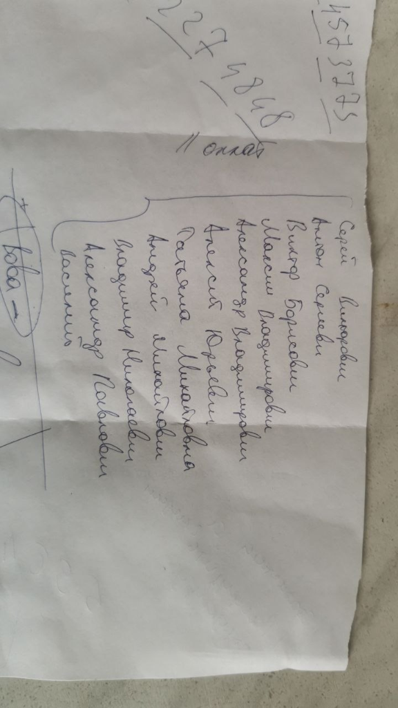
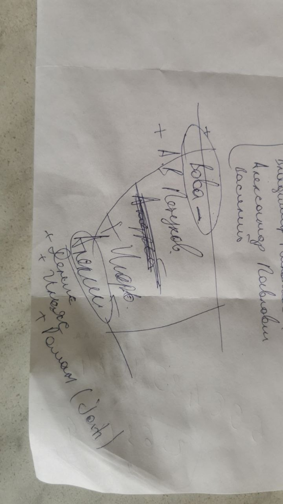
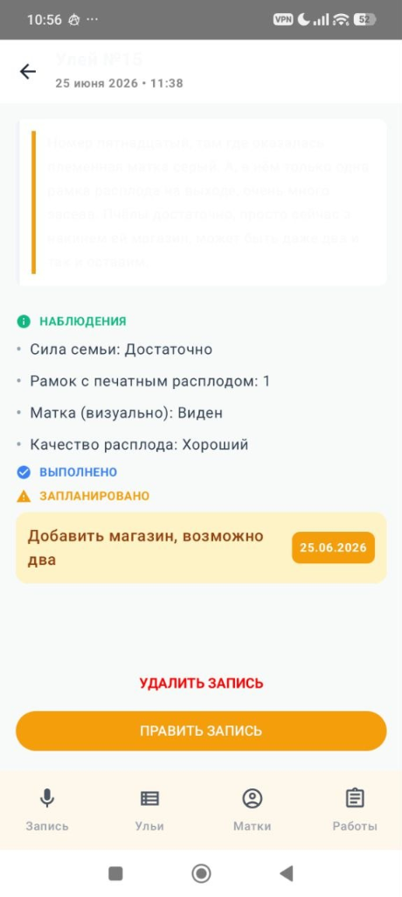

Никаких блокнотов в воске и затертых записей. Приложение понимает профессиональный сленг, ваши привычные термины и само обучает персонального ИИ-ассистента под вашу технологию вождения.
Крупные шрифты, высокий контраст для работы на солнце и мгновенная раскладка по карточкам.

Один клик — и приложение слушает команды у улья в режиме «Без рук».

ИИ выделяет номер улья, статус матки, силу расплода, корма и выполненные работы.

Вся пасека как на ладони: даты последних ревизий, порода маток и задачи.
Пчеловодство не прощает упущенной информации. В суматохе главного взятка или весеннего развития надеяться на память или блокнот — значит терять деньги.
Забыли, в каком улье матка была неплодная, где заложили свищевые, а где маточник на выходе? Результат — потерянный рой и сорванный медосбор.
После 8 часов на ногах под палящим солнцем садиться и переносить каракули из блокнота в тетрадь — адский труд, на который часто не остается сил.
Диктуйте в потоке: состояние расплода, силу, корма, работы с корпусами. ИИ мгновенно раскладывает всё по структурированным карточкам.
Вам больше не нужно прикасаться к экрану липкими пальцами или снимать перчатки.
Положите телефон в карман или на подставку. Произнесите вслух команду старта — звуковой сигнал подтвердит, что запись пошла.
Проговаривайте всё, что видите: силу семьи, запасы меда, сушь, вощину, поведение матки. Шумоподавление отсекает гул пчёл и порывы ветра.
Сказали «Стоп» — запись остановилась, нарезалась и сохранилась в памяти телефона. ИИ сам распределит данные по ульям, даже если нет связи.
Вся история ваших осмотров превращается в живую базу знаний. Вы можете в любой момент голосом или текстом спросить помощника о состоянии любого улья.
Спросите: *«В каких ульях матки 2024 года?»* или *«Где неделю назад было мало корма?»* — ИИ выдаст точный список.
ИИ сопоставляет запланированные расширения, обработки и изоляцию маток с прогнозом погоды и температурами.
Ведёте 2-корпусную систему, работаете с нуклеусами или матковыводными семьями? ИИ адаптируется под вашу схему.
На контроле 3 семьи:
Реальные отзывы и опыт участников нашего открытого сообщества тестировщиков.
«Обновился по прямой ссылке. Голосовые команды и осмотры обработаны чётко. Когда у тебя десятки ульев, надиктовать голосом прямо во время работы — единственный способ не потерять инфу к вечеру.»
«Режим свободных рук в поле — это топ. Сказал старт, продиктовал все по расплоду и меду, сказал стоп. Телефон в кармане, руки свободны, экран чистый.»
«За 2 недели откачки надиктовал 23 осмотра подряд. Все зашло в базу без сбоев. Главное, что не нужно подбирать правильные слова — говоришь как есть, программа всё раскладывает сама.»
Начните с 2-недельного бесплатного тестирования на своей пасеке.
Для пасек выходного дня и стационарных хозяйств до 30 пчелосемей.
Для товарных пасек, кочевых хозяйств и работы с помощниками.
Для матководов, крупных промышленных пасек и племенных репродукторов.
Оформите доступ на весь сезон до 1 февраля 2027 года всего за 1 000 рублей.
Это фиксирует ваше участие и даёт постоянную скидку на продление в следующем сезоне!
Ответы на главные вопросы пчеловодов перед началом работы.
Приложение на 100% автономно. Все голосовые записи сохраняются в зашифрованном виде на самом смартфоне. Как только вы вернетесь в зону связи или подключитесь к домашнему Wi-Fi, все данные автоматически синхронизируются.
Да! Модель обучена именно на лексике пасечников: «сушь», «вощина», «засев», «тянут мисочки», «подставил рамку с пергой», «маточник на выходе». Говорите так, как привыкли в жизни.
Алгоритм фильтрации вырезает посторонний гул и шум ветра, концентрируясь на вашем голосе. Телефон спокойно лежит в нагрудном кармане или на крышке соседнего улья.